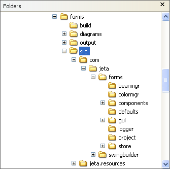
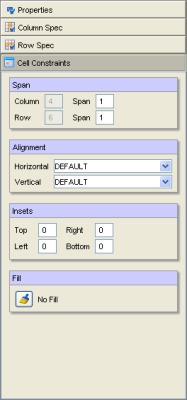

The Abeille Designer components are defined as follows:
| Open Project. This opens a previously created project file. You must have a project opened before you can create forms. | ||
| Open Form. Opens a previously saved form into the designer. | ||
| Save Form. Saves the current form to a file. | ||
| New Form. Creates a new form. Before you can create a form, you must first define a project. | ||
| Show Form. Shows the current form exactly as it would appear in your application. | ||
| Add Column. Inserts an empty column in the currently selected form. | ||
| Delete Column. Deletes the currently selected column. | ||
| Set As Column Separator. This sets the column width to a small, constant size. This is mainly used for spacing between components. You can define this size in the environment settings. | ||
| Set As Large Column Separator. This sets the column width to a small, constant size (approximately twice the height as the standard separator). This is mainly used for spacing between components. You can define this size in the environment settings. | ||
| Column Resize: Grow. This sets the column resize behavior to grow. | ||
| Column Resize: No Grow. This sets the column resize behavior to no grow. | ||
| Increase Column Span. Increases the column span of the selected component by one. | ||
| Decrease Column Span. Decreases the column span of the selected component by one. | ||
| Add Row. Inserts an empty row in the currently selected form. | ||
| Delete Row. Deletes the currently selected row. | ||
| Set As Row Separator. This sets the row height to a small, constant size. This is mainly used for spacing between components. You can define this size in the environment settings. | ||
| Set As Large Row Separator. This sets the row height to a small, constant size (approximately twice the height as the standard separator). This is mainly used for spacing between components. You can define this size in the environment settings. | ||
| Row Resize: Grow. This sets the row resize behavior to grow. | ||
| Row Resize: No Grow. This sets the row resize behavior to no grow. | ||
| Increase Row Span. Increases the row span of the selected component by one. | ||
| Decrease Row Span. Decreases the row span of the selected component by one. |
Before you can create a form, you must create a Project. A Project defines where your source (Java) and image files are located for your application. It is recommended that you store your form files in the same directories where they are used in your source.
Select the New Project menu item. This will invoke the following dialog:

First, provide a path and file name for your project file. Next, you will need to add the paths where your image and Java source files are located. Most applications employ named packages. If this is the case, only include the top most source directory. For example, the source for our Abeille Forms product is organized as follows:

The main development directory is located in c:\forms. Beneath this directory we have a src directory. This directory contains our source tree. All of our source files are packaged in com.jeta.* package space. Furthermore, all of our images are located under the source directory as well (in the jeta.resources directory). Therefore, the only path we would need to add to our project file would be c:\forms\src.
The important point to remember when defining paths is that the forms runtime will load images and nested forms by using the classpath (ClassLoader.getResource). Abeille will store the relative directories of you resources and use those directories when loading from the classpath. Abeille determines the relative directories (or package names) from the source paths you add to the project settings.
Once your project has been created, you can now begin designing forms. Press the New Form button on the toolbar. This will create an empty grid that is the basis for your form. On the left side of the designer window is the components toolbar. This toolbar contains all available Java Beans that can be added to a form. You can also import 3rd party Java Beans by invoking the Bean Manager. Simply click a Java Bean on the component palette and then click on a cell in the grid. The component will then appear on the form in the selected cell. Keep in mind that that size of the component may or may not be correct at this point. The default cell size is based on the preferred size of the component. Some components such as buttons and labels have a natural preferred sized. However, components like an empty JTextField have an undefined preferred width and will be too small when you first add them to the form. You don't explicitly set the sizes for components. Rather, you set the size and resize behavior of their row, column, and cell. Later, we will show how to do this.
Once a component has been added to the form, you can edit its properties. On the right side of the designer are the main settings panels for the form.
| Properties | This panel allows you to set the properties (font, text, color, etc.) for the currently selected component. |
| Column Spec | Allows you to set the constraints for the currently selected column. For example, a column can have a fixed width or it can grow to fill available space in the container. Component widths are constrained by their column. |
| Row Spec | Allows you to set the constraints for the currently selected row. Like a column, a row can have a fixed height or it can grow to fill available space in the container. Component heights are constrained by their row. |
| Cell Constraints | Allows you to set the constraints for an individual cell. You can control attributes such as alignment, insets, and row/column span for a component. |
|
The Row and Column specifications can be set using the control panels. To fully understand these parameters you should read the FormLayout white paper included with this documentation. The following descriptions are for Column Specs, but they equally apply to Row Specs as well. Column Alignment - specifies how components in the column are aligned. Column Size - specifies the size for the column. A column can have a constant size or the column size can depend on the components it contains. Column Resize - specifies if the column should resize itself based on the available space in the container. If you want your components to be resizable, then you should set the column and row resize to Grow. The grow weight determines how much space should be allocated relative to other columns that have grow set. Column Group - allows you to group columns so that they have the same width. |
 |
|
Cell Constraints apply to a single cell. Span - specifies the number of columns or rows a component will occupy. Alignment - specifies how a component will be aligned in its cell. A component will not necessarily fill a cell. It depends on the Row/Column Spec alignments as well as the alignment in the Cell Constraints. If you want a component to fill the entire cell, then select the FILL alignment. Otherwise, you can align a component to the LEFT, CENTER, RIGHT, TOP, and BOTTOM. Insets - specifies the padding between the component and the cell boundary. Fill - allows you to specify a background effect for a cell. Current effects include images, textures, gradients, and solid colors. |
 |